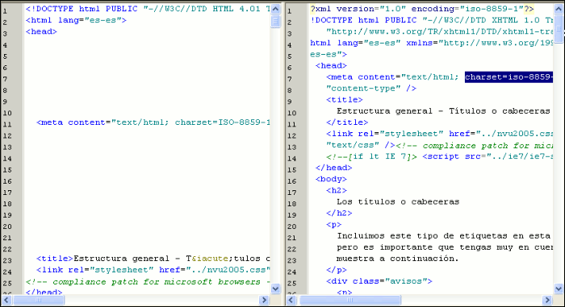

XHTML

Esta es la primera pregunta que surge cuando escuchamos este nuevo acrónimo. El lenguaje extensible de marcado de hipertexto, que sería la traducción del acrónimo XHTML y nace con la intención de sustituir al lenguaje HTML para superar las limitaciones de éste y adaptarse a la creciente cantidad de aplicaciones capaces de hacer uso del lenguaje XML. La idea base es combinar la sintaxis del lenguaje HTML, diseñado para mostrar los datos con la de XML, encargado de describir dichos datos.
El objetivo perseguido es que la información pueda ser interpretada correctamente independientemente del dispositivo desde el que se accede a ella. Para conseguir este fin, la especificación XHTML establece unas normas más estrictas que las del HTML para el etiquetado de los documentos.
El esquema básico del documento, para considerarse conforme a la especificación deberá cumplir las siguientes condiciones:
El elemento raíz del documento debe ser
<html>.
El elemento raíz del documento
debe indicar el espacio nominal XHTML usando el atributo xmlns.
El
espacio nominal para XHTML es http://www.w3.org/1999/xhtml
Debe haber una declaración DOCTYPE en el documento antes del elemento raíz. El identificador público incluido en la declaración DOCTYPE debe hacer referencia a alguna de las tres DTD definidas por el W3C usando el Identificador Formal Público correspondiente.
<!DOCTYPE html PUBLIC "-//W3C//DTD XHTML 1.0 Strict//EN"
"http://www.w3.org/TR/xhtml1/DTD/xhtml1-strict.dtd"><!DOCTYPE html PUBLIC "-//W3C//DTD XHTML 1.0 Transitional//EN"
"http://www.w3.org/TR/xhtml1/DTD/xhtml1-transitional.dtd">
<!DOCTYPE html PUBLIC "-//W3C//DTD XHTML 1.0 Frameset//EN"
"http://www.w3.org/TR/xhtml1/DTD/xhtml1-frameset.dtd">N|VU es capaz de cumplir estos requisitos y crear la base de documentos conformes con la especificación para los dos primeros tipos, ya que, igual que ocurría en HTML, no admite documentos basados en la DTD de marcos.
Además de lo anterior, y aunque las etiquetas serán las que ya conocemos puesto que proceden del HTML, habrá que cumplir algunas normas específicas para que el documento se pueda validar como "gramaticalmente correcto". Algunos de los más importantes serán:
<p>un fragmento <em>enfatizado</p></em>
que validaría correctamente en HTML 4 será incorrecto y
tendrá que escribirse con las etiquetas correctamente anidadas: <p>un fragmento <em>enfatizado</em></p>EMPTY
deben tener una etiqueta de cierre.<p>esto es un párrafo<p>y esto otro sería correcto en HTML, pero tendría que convertirse en <p>esto es un párrafo</p> <p>y esto otro</p> para validar correctamente en XHTML.<table rows=3> sino que habrá que escribirlo <table rows="3"><input type="radio" name="verde" checked>, sino que habría que escribirlo <input type="radio" name="verde" checked="checked">/>. Para garantizar la
compatibilidad es conveniente que este cierre de la etiqueta de
apertura vaya precedido por un espacio con lo que las etiquetas
mencionadas quedarían así: <br /> <hr atributos /> <img atributos />name como el atributo id. En XHTML se utilizará siempre id incluso en aquellos casos en los que se había utilizado siempre name, pudiendo cada atributo id aplicarse a un único fragmento del documento.Aunque en un principio pueda haberte parecido complicado, el objetivo de este epígrafe es sencillamente presentarte algunas normas específicas para que las conozcas, pero no deberías preocuparte por su aplicación, ya que N|VU se ajusta a las especificaciones y se encarga de crear el código acorde con las normas para que sea un documento bien formado y gramaticalmente correcto.
Podemos decidirnos a escribir crear documentos XHTML como opción por defecto, para lo cual bastará con que lo indiquemos en el menú 
 donde marcaremos como lenguaje preferido XHTML 1 y optaremos por
utilizar un DTD transitional o strict. A partir de este momento, cada
vez que pulsemos el icono
donde marcaremos como lenguaje preferido XHTML 1 y optaremos por
utilizar un DTD transitional o strict. A partir de este momento, cada
vez que pulsemos el icono  sin indicar ningún cambio el documento se creará de acuerdo a lo especificado.
sin indicar ningún cambio el documento se creará de acuerdo a lo especificado.
Por otra parte, si desplegamos las opciones, elegimos o pulsamos
o pulsamos  +
+  dispondremos de dos casillas de verificación para indicar para
indicar si queremos que el nuevo documento sea en lenguaje XHTML y con
DTD strict.
dispondremos de dos casillas de verificación para indicar para
indicar si queremos que el nuevo documento sea en lenguaje XHTML y con
DTD strict.
Ten en cuenta que existe un error en el programa por el que, cuando al crear un documento nuevo especifiquemos un lenguaje y una DTD esta elección sobreescribirá las que hubiéramos marcado en las preferencias generales.
Convertir documentos HTML a XHTML
Podríamos convertir manualmente documentos creados originalmente en lenguaje HTML aplicando las normas que hemos comentado, pero puede ser una tarea muy tediosa.
El W3C desarrolló inicialmente una herramienta entre cuyas funcionalidades, además de la de analizar y validar documentos estaba la de corregir y convertir el código de HTML 4 a XHTML 1, siempre que el documento original no contuviera un número excesivo de errores. Dicha herramienta se denomina TidyHTML pero tiene el problema de tratarse de una aplicación en línea de comandos. Para facilitar el uso se ha desarrollado un interfaz grafico de usuario (GUI) que recibe el nombre de HTML-Kit que podrás descargar desde http://www.chami.com/html-kit/download/
 Una
vez instalado el programa original en inglés tendrás que
descargar el parche de traducción al castellano desde
Una
vez instalado el programa original en inglés tendrás que
descargar el parche de traducción al castellano desde
http://www.chami.com/html-kit/plugins/info/irtranslationspanish/
Se trata de un archivo comprimido pero no será necesario que
lo instalemos manualmente, ya que el propio HTMLKit se encargará
de instalarlo. Para ello arrancamos el programa y vamos al menú 
 , elegiremos el archivo que acabamos de bajar y pulsaremos , contestando afirmativamente si se nos hace alguna pregunta más durante el proceso de instalación.
, elegiremos el archivo que acabamos de bajar y pulsaremos , contestando afirmativamente si se nos hace alguna pregunta más durante el proceso de instalación.
Aunque comprobarás que el programa cuenta con multitud de posibilidades vamos a concentrarnos en la que nos ha llevado hasta él. Para ello vamos primero a modificar un par de opciones en las preferencias y luego veremos el procedimiento para convertir un archivo a XHTML.
Si no se aplica inmediatamente la traducción reiniciamos el
programa y, ya con él en castellano, vamos al menú  .
Veremos aparecer un panel con multitud de pestañas y opciones
(que siguen en inglés porque esta parte no está
traducida).
.
Veremos aparecer un panel con multitud de pestañas y opciones
(que siguen en inglés porque esta parte no está
traducida).

Como ves en la imagen hemos seleccionado la pestaña y hemos modificado dos características:
Cuando pulsemos el programa quedará preparado para realizar el trabajo que le vamos a pedir.
El procedimiento a seguir es:
